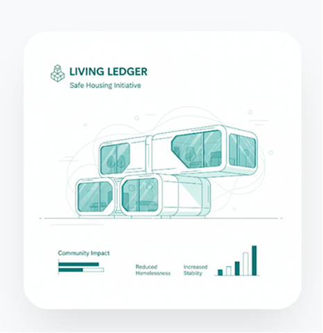

WE ARE ENDING HOMELESSNESS FOR FAMILIES IN KOŠICE AND PREŠOV
A data-driven mission to transform social welfare into measurable human outcomes. We leverage systemic stability to provide permanent foundations for every family.

employees & volunteers
expenditures reduced
CO2 avoided
generated
Precision Social Architecture
Our approach integrates five core enablers to create a sustainable exit from poverty. Each intervention is tracked, verified, and optimized for maximum community impact.
Precision Social Architecture
Our model operates as a high-fidelity feedback loop, where data informs every structural decision. By treating social welfare as an engineering challenge, we build systemic stability that doesn't just treat symptoms but provides permanent foundations for families. Through real-time tracking of housing retention, employment stability, and health outcomes, we transform lives with clinical precision and human empathy.